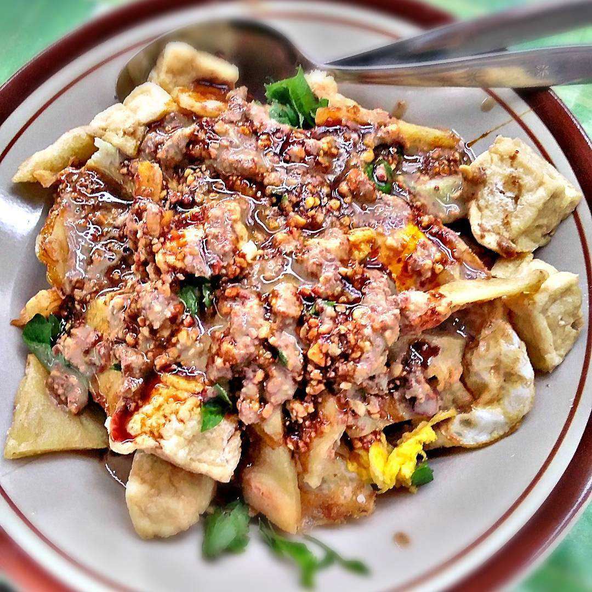
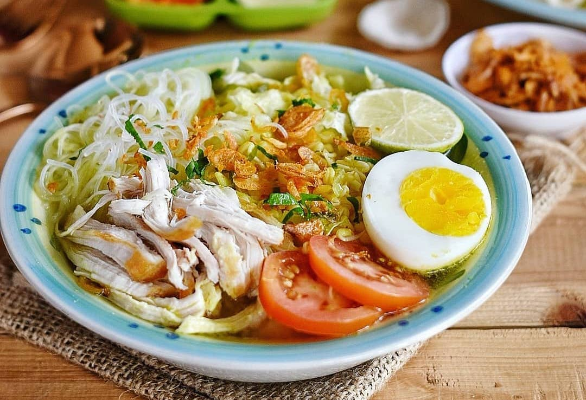
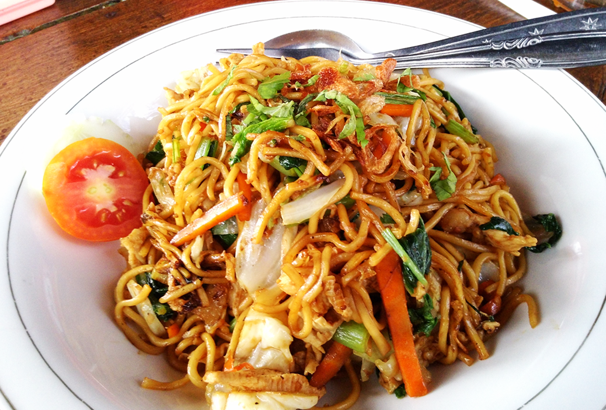

Pesona Semarang
Home
(current)
Kategori
Wisata Kuliner
Wisata Pantai
Wisata Budaya
kategori Lainnya
Tempat Wisata
Tempat Wisata Kategori Kuliner
Lumpia Semarang
merupakan salah satu wisata kuliner di kota Semarang.
Gang Lombok Jalan Gang Lombok No. 11 Purwodinatan
Bandeng Presto
merupakan salah satu wisata kuliner di kota Semarang.
Jl. Pandanaran No.57, Randusari, Kec. Semarang Sel., Kota Semarang, Jawa Tengah

Tahu Gimbal
merupakan salah satu wisata kuliner di kota Semarang.
Tahu Gimbal PAK EDI ASLI ( Taman Indonesia kaya , sejak 1982) Jl. Pandanaran 2 No.117, Mugassari, Kec. Semarang Sel., Kota Semarang

Soto Ayam
merupakan salah satu wisata kuliner di kota Semarang.
Jl. Pamularsih Raya No.32, Salamanmloyo, Kec. Semarang Barat, Kota Semarang

Bakmi Jawa
merupakan salah satu wisata kuliner di kota Semarang.
Jl. Anjasmoro Raya, Karangayu, Kec. Semarang Barat, Kota Semarang